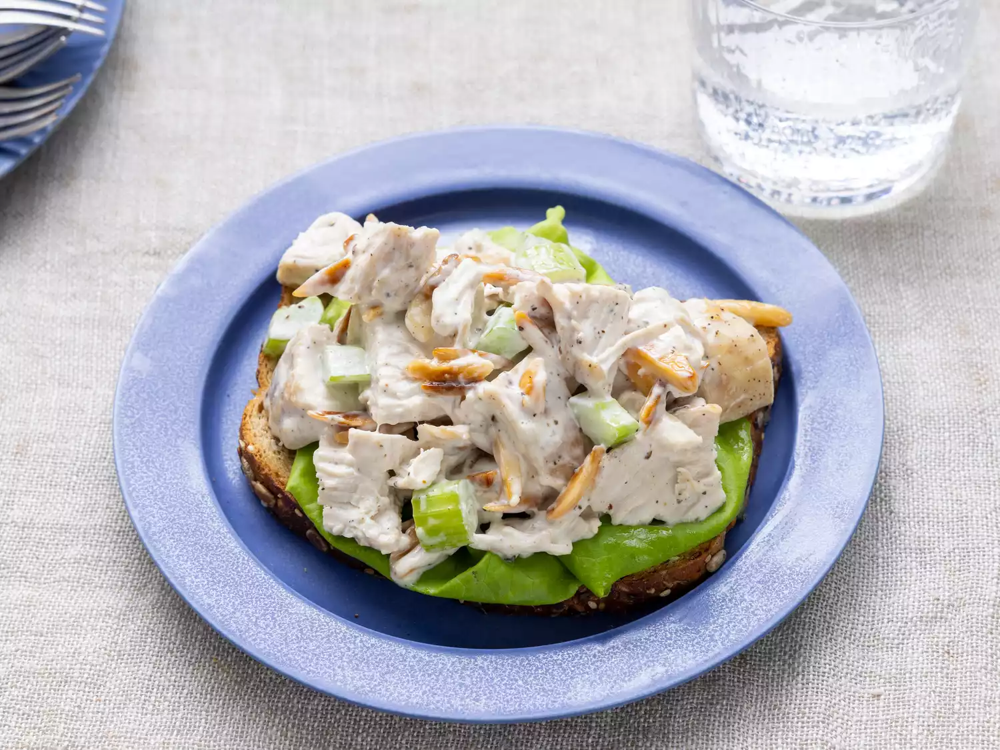

Chicken salad is a fresh and versatile dish that combines tender, shredded or chopped chicken with a blend of crisp vegetables and creamy dressing. Typically made with ingredients like celery, onions, and herbs, the salad is mixed with a creamy base of mayonnaise or Greek yogurt, adding a rich texture that pairs perfectly with the juicy chicken. The flavors meld together, offering a balance of savory, tangy, and refreshing notes in every bite.
Often enjoyed as a light lunch or dinner, chicken salad can be served in a variety of ways—on its own, over a bed of leafy greens, or as a filling for sandwiches and wraps. It’s a quick and satisfying dish that’s perfect for using up leftover chicken or making ahead for meal prep. With its combination of protein and crunch, chicken salad is a deliciously simple option for any time of day.